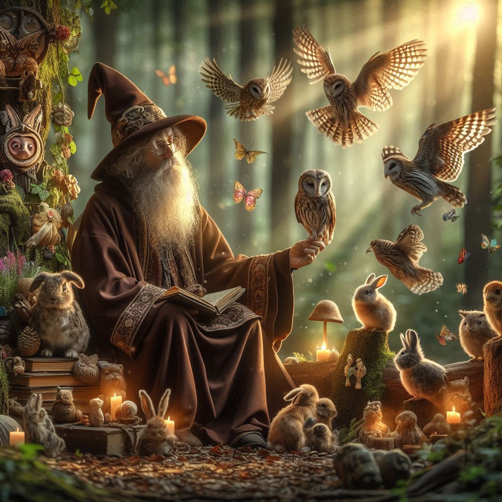

Radagast el Pardo

Radagast, también conocido como Aiwendil, era un Maia de Yavanna, la vala de la naturaleza. Su amor por todas las criaturas vivientes era inmenso, y su conocimiento de las plantas y los animales era vasto. Se le representaba a menudo con una larga barba blanca y un manto verde, y solía viajar en un trineo tirado por conejos. Radagast era un personaje excéntrico y un tanto olvidadizo, pero su corazón era puro y su amor por la Tierra Media era inquebrantable. Aunque su papel en la Guerra del Anillo fue menor en comparación con Gandalf y Saruman, Radagast jugó un papel importante en la protección de la naturaleza y en la preservación de la vida en la Tierra Media, siendo un guardián silencioso de los bosques y los animales.